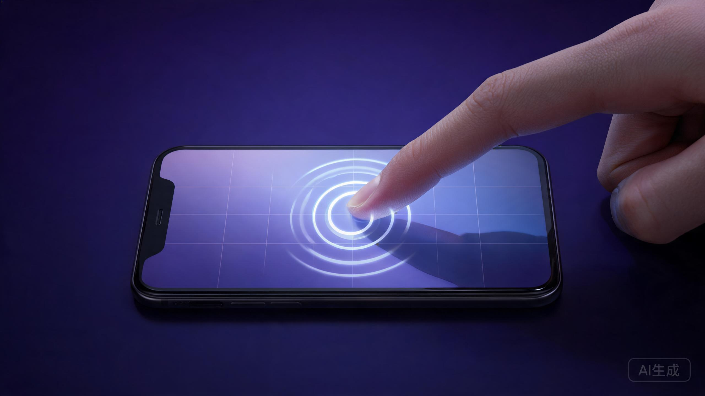
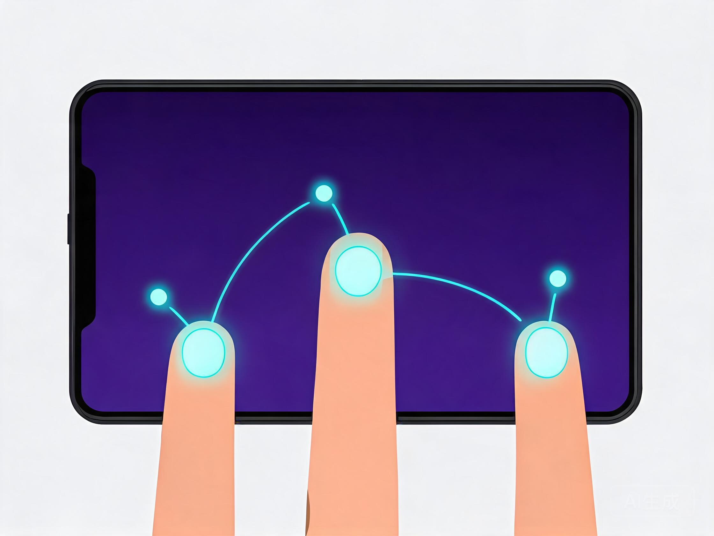
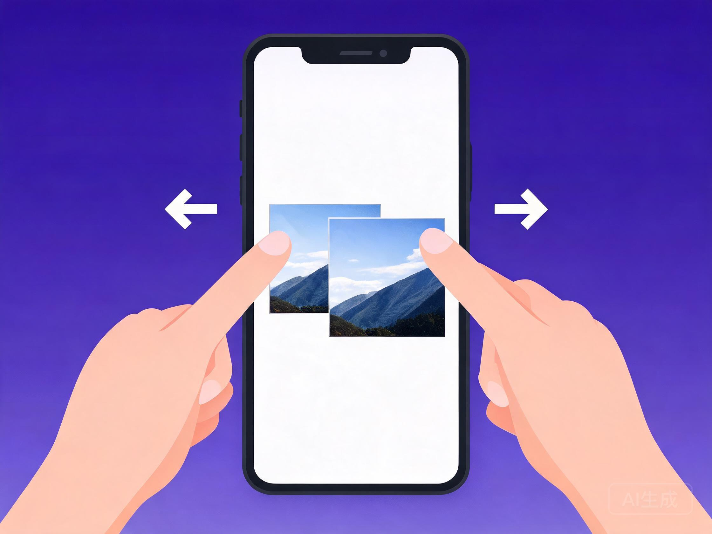
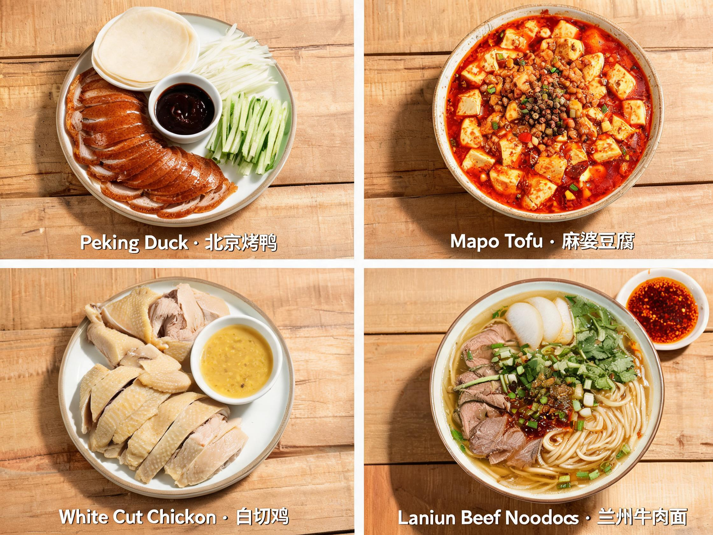
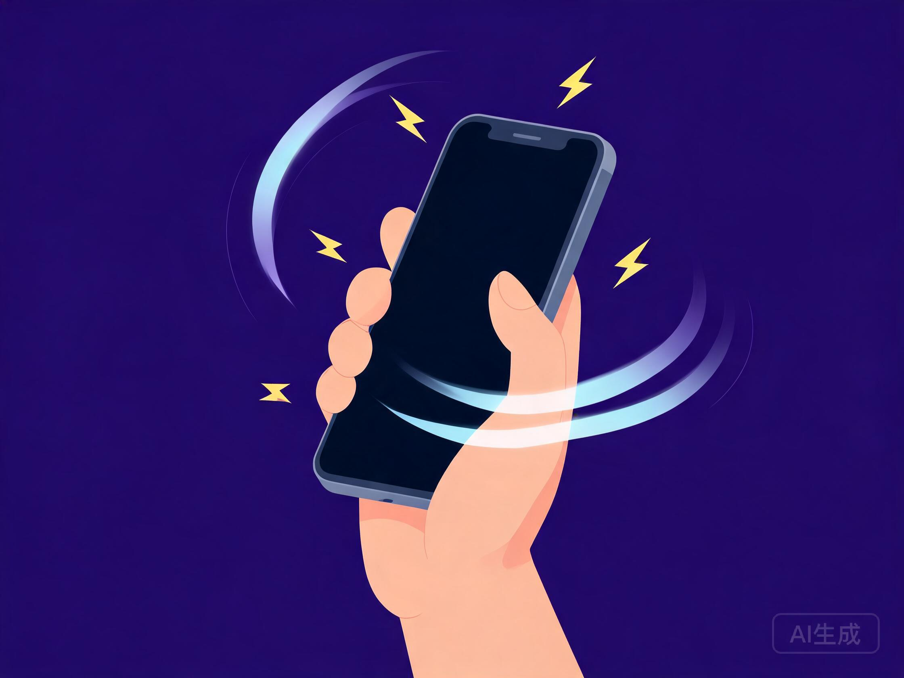

移 动 端 · 触 摸 交 互
手机上用户用的是手指——按下、滑动、长按、双指缩放、摇一摇。这节课把触摸事件讲清、演示透，再用 4 个递进任务练熟。

touch 触摸事件，请用手机打开；没有手机时可用浏览器设备模式体验单指操作。手机上最容易踩的四个坑
| 写出来的现象 | 真正的原因 | 正确做法 |
|---|---|---|
| 按钮点一下变色，之后一直是那个颜色 | 用了 :hover，手指没有"悬停"，触摸后状态不会撤销 | 改用 :active，或只在 @media (hover:hover) 里写 hover |
| 点击按钮反应慢半拍 | 浏览器在等"是不是双击"，历史上会等 300ms | 加 touch-action: manipulation，或直接用 touch 事件处理 |
| 拖动卡片时整个页面跟着滚 | 浏览器把手势优先给了页面滚动 | 容器加 touch-action: none（接管手势）或 pan-y（只接管横向） |
| 判断不了"往哪滑、几根手指" | 只监听了 click，它只告诉你"点完了" | 监听 touchstart / touchmove / touchend，从 touches 取坐标与数量 |
手指是"多个触点 + 一段轨迹"。要跟手、要方向、要几根手指——这些都得靠触摸事件。
<meta name="viewport" content="width=device-width, initial-scale=1.0">；
② -webkit-tap-highlight-color: transparent 去掉点击灰块；
③ 要接管手势的容器加 touch-action: none，否则浏览器会先滚动页面。
核心模型
| 事件 | 什么时候触发 | 典型用途 |
|---|---|---|
touchstart | 手指刚按下 | 记录起点、开始长按计时 |
touchmove | 手指在屏幕上移动（连续触发很多次） | 跟手拖动、画板、判断方向 |
touchend | 手指抬起 | 计算滑动距离与速度，决定是否翻页 |
touchcancel | 被系统打断（来电、通知、手势返回） | 清理状态，避免"卡住" |

wwm_pad.addEventListener('touchstart', function (e) {
// touches 屏幕上所有手指（含其他元素上的）
// targetTouches 只在当前元素上的手指
// changedTouches 本次事件"变化"的手指（抬手时从 touches 里消失的就是它）
var wwm_t = e.touches[0]; // 第一根手指
console.log(wwm_t.clientX, wwm_t.clientY); // 相对可视区域
console.log(e.touches.length); // 几根手指
});
抬手时一定要用 changedTouches[0]：touchend 触发时那根手指已经从 touches 移除，用 touches[0] 可能拿到别的指头甚至 undefined。
用手指按一下、拖一拖、再抬起，观察真实触发顺序
你应该观察到：touchstart → 若干次 touchmove → touchend → 最后才是 click。移动距离越大，move 次数越多——这就是"跟手"的原理。
touchend 之后系统还会补发一次 click。两套逻辑都写会"点一次执行两次"，记得二选一或在 touch 处理里 preventDefault()。记起点 → 算差值 → 比较绝对值（阈值 30px）
var wwm_startX = 0, wwm_startY = 0;
wwm_pad.addEventListener('touchstart', function (e) {
var wwm_t = e.touches[0];
wwm_startX = wwm_t.clientX;
wwm_startY = wwm_t.clientY;
}, { passive: true });
wwm_pad.addEventListener('touchend', function (e) {
var wwm_t = e.changedTouches[0]; // 抬手时用它
var wwm_dx = wwm_t.clientX - wwm_startX;
var wwm_dy = wwm_t.clientY - wwm_startY;
var wwm_line = 30; // 阈值：太小会把抖动误判成滑动
if (Math.abs(wwm_dx) < wwm_line && Math.abs(wwm_dy) < wwm_line) return; // 算点击
// 谁大听谁的
if (Math.abs(wwm_dx) > Math.abs(wwm_dy)) {
console.log(wwm_dx > 0 ? '向右滑' : '向左滑');
} else {
console.log(wwm_dy > 0 ? '向下滑' : '向上滑');
}
});
为什么需要阈值？手指按下几乎不可能完全不动，几个像素的抖动会被误判成"滑动"。30px 是经验值，卡片越大可以适当加大。
时间维度的判断（长按 600ms · 双击 300ms）
var wwm_timer = null;
var wwm_lastTap = 0;
wwm_el.addEventListener('touchstart', function () {
wwm_timer = setTimeout(function () { console.log('长按触发'); }, 600);
}, { passive: true });
wwm_el.addEventListener('touchend', function () {
clearTimeout(wwm_timer); // 抬手了，取消长按
var wwm_now = Date.now();
if (wwm_now - wwm_lastTap < 300) {
console.log('双击');
wwm_lastTap = 0; // 重置，避免三击被算成两次双击
} else {
wwm_lastTap = wwm_now;
}
});
// 被电话、通知打断时也要清理定时器，否则状态会卡住
wwm_el.addEventListener('touchcancel', function () { clearTimeout(wwm_timer); });
长按还会触发系统菜单（选中文字、图片另存），记得加 user-select:none 和 -webkit-touch-callout:none（iOS）。
两指距离的变化 = 缩放比例

function wwm_dist(t1, t2) { // 两指直线距离
return Math.hypot(t2.clientX - t1.clientX, t2.clientY - t1.clientY);
}
var wwm_lastDist = 0;
var wwm_total = 1;
wwm_el.addEventListener('touchstart', function () {
wwm_lastDist = 0; // 新一轮手势，清空上一轮残留
}, { passive: true });
wwm_el.addEventListener('touchmove', function (e) {
if (e.touches.length < 2) return; // 少于两根手指不处理
var wwm_d = wwm_dist(e.touches[0], e.touches[1]);
if (wwm_lastDist) {
var wwm_step = wwm_d / wwm_lastDist; // >1 放大，<1 缩小
wwm_total = Math.min(4, Math.max(1, wwm_total * wwm_step)); // 每帧比例要累乘并限幅
}
wwm_lastDist = wwm_d;
}, { passive: false });
| 关键点 | 为什么这么写 |
|---|---|
Math.hypot(dx, dy) | 直接算两点直线距离，等价于 √(dx²+dy²)，少写乘法不易错 |
clientX / clientY | 两指必须用同一套坐标系，混用 page 会算错 |
scale > 1 表示放大 | 两指间距变大 = 图片被"拉开"，比例是本帧相对上一帧的倍数 |
{ passive: false } | 告诉浏览器"我要阻止默认行为"，否则 preventDefault() 失效并报警告 |
total = total × step | 每帧比例只是"相对值"，真正要用的总倍数必须累乘并限制在 1～4 |
还有三类在作业里很出彩的"设备事件"：
| 事件 | 能做什么 | 注意点 |
|---|---|---|
orientationchange / resize | 横竖屏切换时重排布局或重绘 canvas | resize 会连续触发，记得防抖 |
deviceorientation | 陀螺仪：倾斜角度 α β γ，做水平仪、3D 视差 | iOS 13+ 必须用户点击后调用 DeviceOrientationEvent.requestPermission() |
devicemotion | 加速度：摇一摇、计步、晃动检测 | 阈值判断 + 冷却时间，否则一次摇动触发十几次 |
观察 → 实现 → 综合 → 拓展（至少完成 ⭐⭐ 两关）

⭐⭐ 任务二4 道中华美食卡片，左滑下一道、右滑上一道，阈值 40px，边界提示，300ms 冷却防连跳。
打开卡片页 → ⭐⭐⭐ 任务三双指 1x～4x 以两指中点为基准缩放，双击 1x/2x 切换，放大后可单指拖动，边界回弹。
打开查看器 →
⭐⭐⭐⭐ 任务四摇动手机随机抽一道菜，1.5s 冷却；无传感器时显示"不支持"并给降级按钮，iOS 走权限申请。
打开摇一摇 → ⭐ 任务一用第 3 节探针区做 5 种操作，记录触发顺序；能回答 move 次数、click 时机、touchcancel 影响。
回到探针区 →不只看得分，更看讲得清
| 维度 | 分值 | 评分要点 |
|---|---|---|
| 事件理解 | 25 | 四个触摸事件的触发时机、touches 三个列表的差别、为什么抬手用 changedTouches |
| 手势实现 | 30 | 阈值、方向判断、冷却时间是否合理；边界与误触处理是否到位 |
| 移动端体验 | 20 | 是否跟手、有无页面误滚动、是否有过渡动画、横竖屏是否正常 |
| 降级与排错 | 15 | 不支持传感器/无权限时是否有友好提示；控制台无报错 |
| 规范与记录 | 10 | 命名前缀、文件头信息、AI 提示词记录、注释是否清晰 |
touchend 里要用 changedTouches[0]？
② 滑动阈值设成 5px 会怎样？③ 双指缩放怎么保证图片不"跳"？
④ 页面加了 touch-action:none 后发生了什么？⑤ 没有传感器数据时代码怎么走？